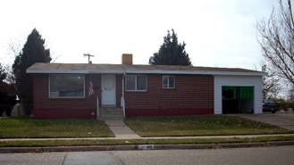
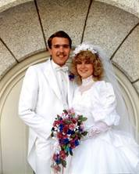
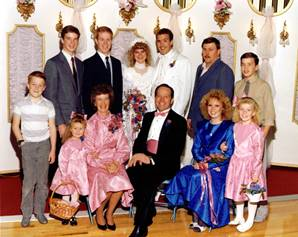
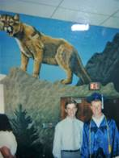
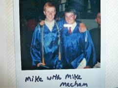
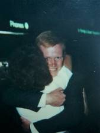
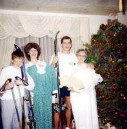
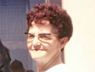
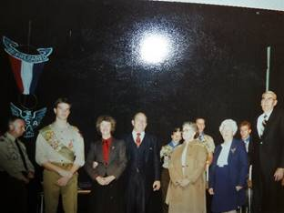
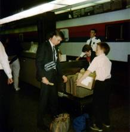

32 - MOVE TO LAYTON, UTAH – KEN’S MOTHER’S HOME AT 419 W PAUL – APRIL 1987 TO DEC. 1990
We ended up living at Ken’s Mother’s home longer than we had anticipated. It was mainly because Shellie got married, and Mike and David went on missions while we were there and our money went for those things rather than for a home. I know this was a blessing, however, as I always wanted to give our children a nice reception when they got married and I always wanted our sons to go on missions. We couldn’t have afforded it if we had stayed in Arizona, and if we had rented a home, we probably wouldn’t have had the money.
Shellie had come down to Arizona with her dad so she could get a job and earn money to go to the Study Abroad with BYU to Israel. They would be the first class to stay in the new Jerusalem Center. She had read the book “One in Thine Hand by Gerald Lund, when she was a teenager and she loved that book. She wanted me to read it, but I didn’t feel I had the time so she read it to me as I did other things. I loved it too. It was about the Jews and Arabs. She had the desire to go to Israel from that time on. When she was at BYU her Sophmore year and heard about this travel abroad semester in Israel, she called and said she wanted to drop out of school for now to work and earn money to go with them. She said she knew we didn’t have the money to help her go, and she didn’t want us to anyway – she wanted to do it herself. We approved of her decision. After we moved to Ken’s mother’s house in Layton, I was talking to a friend in Firth and they were going up to Island Park to manage a gift shop in Max’s Inn. She knew Shellie and wondered if she would like to come work for them and if she wanted more money, they were sure she could be a waitress there for the restaurant at Max’s Inn. Shellie was excited with the offer. Her board & room would be furnished. She went and did make good money, but as she neared the end of the summer she was worried that she didn’t have enough money to be able to go. Her dad told her not to give up, to keep praying and trying to do her best and if she was supposed to go, it would happen. He said “Don’t give up until the plane leaves without you.” She didn’t give up. She had sent in her papers. One of the questions asked something like “Where will the money come from to go on this semester abroad?” She answered that she was working to earn the money. She received a letter with a check made out to her for $1,000. (I don’t remember for sure how much it was) but it was the difference she needed to be able to go to Israel. She was so excited and so were we. They said in the letter that they were proud of her for earning the money herself, that the parents, of most of the kids who were going, were paying the entire amount, and so they were giving her this money to help her finance this semester abroad. Wow! What an answer to her (and our) prayers.
While she was at Island Park, Roy Seymore, who she had met and dated in Arizona and they had communicated back and forth by phone and letters, came to Island Park and proposed marriage to her. She told him that she would, but that she had been working and saving to go to Israel on the semester abroad which left in September and returned in December. She told him that this had been her goal for a long time and she was going to go. He understood and gave her the ring.
Shellie finished her jobs at Island Park and got home just a week before she was to leave for Israel. Roy came up and stayed with us as he wanted to be with her as much as possible before she left. They had set the date of their marriage for the 18th of December, so that meant that we had this week to get most of her wedding and reception planned and do as much as we could. With Roy there, it wasn’t quite as easy, but we did get a beautiful wedding dress & veil rented for her for that day, we talked to a caterer and decided on the refreshments, we talked to a company who decorates for receptions and Shellie picked out what she wanted. We tried to be frugal, but we wanted it to be nice also, and it was. We picked out the material and patterns for the dresses for her maid of honor (Sandi) and her brides maids (her friends) and her flower girls (her nieces, JaNae & Chelci). We got the engagement picture taken and the photographer lined up. Wow! We accomplished a lot and I did the rest while she was gone – invitations, etc.
The night before she was to leave, she came out of her room all frantic saying she couldn’t find her passport. She was to leave early the next morning and this was about 10:00 pm, if I remember right. Roy, Ken and I all started helping her look and she was getting more and more worried and upset. Finally, she asked us all to leave her room. A few minutes later she came out with her passport and a smile on her face. She said she knew she needed to pray and ask Heavenly Father to help her find it, as she knew that He knew where it was. Right after she arose from her prayer, she went right to her journal and there it was. Then she remembered that she had put it there as she knew she would be taking her journal with her. We were all relieved and thankful she had thought to pray.
Not long after she had gone, we received a letter from her telling us that she wasn’t sure she wanted to marry Roy. She felt she didn’t know him well enough and wasn’t sure she loved him enough to marry him. Her dad wrote back and told her not to marry him if she wasn’t sure, and that we would hold up the wedding plans until we heard back from her. He said I don’t want Mom spending the money if you’re not sure. Shellie fasted and prayed and we did too and she wrote back telling us to move on with the wedding plans as she had received an answer that she was to marry him.
Shellie had a wonderful experience in Jerusalem, learned a lot and loved being there. She determined that someday she would take her husband and go back, and she did.
When Shellie returned from Israel, she only had a week before her wedding. Roy came up to spend the week with her. All was going well until one night when Ken & I returned from a meeting. Shellie was sitting on the couch crying. I asked her what the matter was, and she said she didn’t know if she could marry Roy. They had been talking and both became upset. Roy was downstairs. As we talked, she said she didn’t know if she would be a good wife and mother as she didn’t like to cook, etc. I calmed her down and she felt better and then I went to talk to Roy. He was very upset as he didn’t think she wanted to marry him. When I explained how she felt, he said “I’m not marrying her to be a slave for me, I will help her cook and clean house. I’m marrying her because I love her.” I told him to go back up and talk to her and he did and they worked things out.
The wedding was at the Salt Lake Temple and Ken and I were so happy that she was worthy and had chosen to be married in the house of the Lord for time and all eternity. We were so proud of her. I beamed with pride as I sat by her during the endowment and the wedding. The wedding was wonderful and Shellie looked so beautiful in her wedding dress. We had pictures taken afterward and then went to their wedding breakfast at the banquet room at Chuck-A-Rama in Salt Lake. The reception was held at the church and it was decorated so beautifully and everything went perfect. There were lots of people who attended, even more than I even hoped for. Sandi and her daughters looked so beautiful too. Roy, the fathers and brothers looked so nice in their tuxedos. The flowers were beautiful – everything was wonderful and the best part was that Shellie thought so too. Roy’s parents were having an Open House for Roy and Shellie at their church in Taylor, Arizona. The rest of our family couldn’t go, so Ken and I rode down with Rich & Lois in their motor home. We paid the gas and they used their motor home. We went on over to Disneyland too before coming back home. The Open House was not formal and there wasn’t a line so the bride and groom just milled around and talked with the people who came. It was nice and we appreciated the hospitality that Veldon and Patsy showed us. They are good people. She told me that she had prayed that Heavenly Father would find a beautiful, righteous girl for Roy to marry, and her prayers were answered.
Disneyland –. Ken and I went with Rich & Lois in their motor home. We stopped at Disneyland on the way to Taylor, Arizona for Shellie & Roy’s Wedding Open House held at Roy’s church. This was after Shellie’s reception in Layton. We paid the gas for the motor home. This was in December of 1987. The first time we went to Disneyland, we took our young family and went with Larry & Tammy, it was probably 1972. We had a great time
Mike’s graduation - Ken & I drove up to Firth, with our family, for Mike’s graduation from Firth High School. It is a small high school, so a small graduating class, but it was a nice graduation exercises held in their school gymnasium.
Mike told us soon after we had moved to Arizona, and before he went back in the fall to Firth for his Senior year, that he wasn’t going on a mission. He had always wanted to go on a mission so we were devastated. Ken talked to him and found out that he knew we didn’t have the money to send him on a mission – so he wasn’t going. Ken told him that things would work out, but he wasn’t convinced. While he was staying with the Mechams, Mike Mecham’s grandfather, who lived close by and was a patriarch, asked Mike if he would like him to give him a patriarchal blessing. Mike did. (I can’t remember whether we were there or not) Anyway, that changed Mike’s mind about going on a mission because in the blessing it told him that he would go on a mission and that he would be able to convert people that others couldn’t. (Something like that). Ken and I were grateful for that blessing and we knew that he was supposed to go and that things would work out for him to fulfill that mission. We know if we trust in the Lord, and keep his commandments; He can make things happen for our good.
 We appreciated Ken’s mom for her love and hospitality, but it was still hard to live with her. It was both hard and yet good for her too. She had been alone for several years and all of a sudden, we move in with five of our six children. We did pay the utilities and buy the food, and since her home was paid for, she was able to use this money for other things. I did most of the cooking and cleaning. Both of us cleaned thoroughly on Saturdays. The boys mowed the lawns in the summer and shoveled the snow in the winter - so we were a help to her, and it would have been hard on us without her willingness to let us move in with her. It was definitely a blessing, and I think to her as well. She told us afterwards, how lonely she was without us. The children got to know and appreciate their grandmother better. Jeff had it the hardest because he was only nine years old and grandma didn’t have much patience with him. In fact, many times she was mean to him. The main reason I decided I needed to work was because Mike wanted to go on a mission and what Ken was making as a temporary employee out at Tooele Army Depot wasn’t enough. This was before the “equalized system”, so foreign missions were expensive. When our Bishop asked Ken & I how much we could put down that we would pay for Mike’s mission, we said $300. or less. He said “Oh, Mike wants to go abroad so let’s put $300. or above.” We said we could not afford more than $300, and he said “Well, the Elder’s Quorum can help out if needed.” So, we let it go at that and Mike received his mission call to Norway. We were all excited, but it was expensive - $500. and it went up to $525. The ward didn’t help pay and it was a struggle, but we made it and were blessed in many ways. Later, David wanted to go on his mission when he turned 19, which was before Mike came home. Again, we met with the same bishop and the same senero occurred. David was called to the France/Belgium Mission, which started out at $525 and went to $550. Again, the ward didn’t help out, but both Ken and I had better paying jobs, so finances were better.
KEN’S WORK
When my Mom heard we were moving back to Utah again, she told Ken about a contracting superintendent she knew that was hiring workers. Ken called, interviewed and was hired. When Ken started work for him, he found out the general contractor was a high councilman in the Clearfield Stake when Ken was in the Bishopric with Kent Murdock. That was years earlier so he doubted if the contractor remembered him. Ken was able to have Mike work with him and they first framed a home in Roy. The material was delivered on the job and they started laying out the plates for the walls. That was about as much as they got done the first day, but because the bunks of 2x4s had the shipping bands broke on them, before leaving the job site, Ken took a can of red spray paint and sprayed two stripes across the bunk. The next morning when they came, it was obvious that someone had taken quite a few boards. Ken called the superintendent who called the Roy police department. A Police officer soon arrived on the job site and asked if they could identify any of the material to which Ken told them that part of the 2x4s would have 2 red stripes on them and he showed the officer how he had marked the outside boards of the bunk. A little later, the superintendent came over to the job site and said that the officer had driven down through the neighborhood a ways and saw a new garage being constructed. He went inside the garage and inspected the walls and there were several of the studs in the wall that had the two red stripes on them. The superintendent told Ken that the officer called him and told him that he had found where our material was. He met the police officer at the address and told the police officer what he would take for selling the material to the man, which was double the price he could have bought it out of the store for, but because of the inconvenience and delay in work, he added that to it. The officer told the man that he could pay it and there would be nothing more done, but if you don’t pay it, I will arrest you and take you into jail. The man paid it.
Snowbird – Bryce & Deanna have a condo at Snowbird. They let us use their condo a couple of times when they were not able to use it. One-time Ken & Mike couldn’t go as they were working on a house, so I took David, Scott & Jeff. Scott & I got up early Sat. morning and hiked to the top of the mountain and rode down on the tram. Jeff and David wanted to sleep in, so didn’t go. Scott likes to hike and I wanted to go, but halfway up the mountain, Scott got tired and wanted to go back. I told him we were halfway so we needed to go the rest of the way so we could ride the tram free, which we did.
The second home that Ken and Mike built was in a new subdivision just south of the Hill Air Force Base runway. As they were framing the interior basement walls, several times during the day, jet planes would leave the runway and would immediately climb in altitude which put the roar of the jet going right down into the basement and almost deafening them with each jet that took off. Towards quitting time, the lady for which they were building the house for stopped by to see how they were doing. Ken mentioned to her the deafening of the jet roar. She kind of laughed and said “Do you know the reason for them taking off that way?” Ken said he didn’t. She worked for Hill Air Force Base so explained that those jets that come off and then climb like that is the first flight that the plane has made since the engine was overhauled. The pilots of those planes receive extra pay for flying those planes the first time. When the pilot takes off, as soon as the tail of the plane will clear the runway, he immediately drops it into a straight climb up so that he can gain as much height as he possibly can and then he rolls the plane to the west and flies over the Great Salt Lake. By doing this, should the plane have a flame out, the pilot should be able to have enough altitude and speed so that he can either come back around and land on the runway or ditch the plane in the Great Salt Lake.
Mike and Ken finished the framing of the stairwell from the main floor to the upstairs floor and then began laying out the floor joists. They had about half of the floor framed before quitting time. That evening, the superintendent called Ken at home and told him that he had put the wall between the front room and the kitchen wall three feet off. Ken told him that it was exactly where the plans called for it, to which the superintendent said “Well, let’s not argue about it on the telephone, but I’ll meet you in the morning at the job site and we will try to figure out what happened.” The next morning as they met, the superintendent pulled out his plans and pointed out where the wall was supposed to be. Ken just opened up his set of plans and told him that that’s not where my plans says it is to be. The superintendent took the plans from Ken and turned to the front page and exclaimed: “Oh no, I gave you the wrong set of plans.” They determined there was nothing they could do but to move the wall three feet. Ken explained to the superintendent that half of the floor joists had already been cut and nailed in place for the second floor. As they looked over the plans, they determined that the joists that had been cut, that would now be too short, could be used on the second half of the second floor and cut more for the first half. Ken told him that that would take at least a day’s worth of work, plus he would go through a good many Sawzall blades. The superintendent said he would figure out a way to make it up to Ken, but would prefer that the general contractor didn’t know the mistake.
About this same period of time, Ken got a call from the personnel dept at Tooele Army Depot asking if he could come and apply for a position. Terry Matthews, who is over the maintenance and grounds division, wanted to have him come to work for them. Terry was a personal friend of ours and we had gone out to an Erda Ward Reunion, where he had talked with Terry and told him that we had just moved up from Arizona. Ken asked the person from the personnel dept, that had called him, how soon they would need him to start work? He told Ken that Mr. Matthews would like him just as quickly as possible. Ken told him that he had at least two more weeks of work on the house that he was presently framing and he wouldn’t leave it in the middle of the job. The person told Ken that they needed him before that, so Ken told him that he wouldn’t be able to accept it. The next evening, the personnel dept called Ken back and said that Mr. Matthews said that that would be ok and they asked Ken if he could find time to come out and take a physical and turn in an application, to which Ken said he would.
As Ken and Mike finished up the house, the superintendent talked to Ken about the extra money that he would owe him for the mistake in the plans and so he wanted to have Ken & Mike work on a Saturday, when the house was all but completed and add a red wood patio deck, which Ken agreed to do. A little later the superintendent got a hold of Ken and said they were ready to put the patio on, so he would order the materials for the following Saturday. Ken told him to not have it delivered until Saturday morning. The following Saturday morning, Ken and Mike went over to frame the patio and the material had been delivered Friday night but all that was left was just the steel strapping bands and a set of truck tire tracks. Ken called the superintendent to let him know what had happened. The superintendent told him that he would see what he could get worked out, but a couple of weeks later, Ken happened to meet him at a gas station and he talked with him. He apologized that he hadn’t been able to get him any money. He said that the general contractor had fired him using the loss of that material as an excuse. In reality, the superintendent hadn’t received pay for over two months, nor did he get paid for any other outstanding expenses for any of the jobs he had been running. Because of this, he had to sell his back hoe to clear several of the bills in which the company had refused to pay. The superintendent said he would pay it out of his own money, but he was now on the verge of bankruptcy himself. When Ken had first signed up with the construction company, one of the conditions was that he put a certain percent of his wage into a company profit sharing. None of the employees of the company received that money back because the owner took out bankruptcy on the company. Boy, that contractor was a crook. There are too many crooks in the contracting industry.
Another incident with this house is after they had framed the second-floor exterior walls, they put a glue lamb beam from the north peak of the roof to the south peak of the roof. That beam would be the baring beam to hold all of the roof joists. While Ken was studying the plans, Mike was just standing there and saw a bird land upon this beam. He removed a 16-penny nail from his apron and much to his surprise, hit the bird some 16 feet above and the bird fell directly down to the floor and just laid there. Mike kind of stammered in disbelief saying: “I didn’t think I would come close enough to even scare it, let alone hit it in the head and knock it out.” The bird lay on the floor for a minute or so and then began to shake, stood up and flew away.
Ken was called to start work for Tooele Army Depot in the maintenance dept. Ken later became a planner/estimator. After three years they had a large reduction due to most of the depot closing down, and Ken was one of those to go. He then went to work for Fieldcrest Cabinets as a salesman for a few months and even though he feels they are the best cabinets built, and continues to recommend them to people today, he had to quit because they didn’t give their salespeople a large enough percentage to make a living. About that time, my brother, Kim Byron, talked Ken into selling for Beneficial Life Insurance with him. Kim likes selling insurance and does very well, but Ken, after trying it for a few months, decided that wasn’t for him either. Soon after that he applied for the Maintenance Director position at the Five Points Mall in Bountiful, Utah. He was hired, and enjoyed working there. He oversaw the cleaning people and the gardener and he made repairs on the mall, etc. Russ was the manager and did not have the back bone to stand up to the man who lived in Boise, Idaho and was the Owner’s middleman between them and Russ. This man didn’t want to spend any money. At first, they did do some renovation, but towards the end, he wouldn’t even pay to have the roof repaired and it got so bad that Ken just had to take buckets to the shop owners when it rained. Ken had a helper working with him, John. He was a good worker too and he knew karate. They had gang members spray painting graffiti on the outside walls of the mall. Ken or John had to sand it off and repaint it. Finally, John, found out the name and address of the leader of the gang and went to visit him. He told him that if they ever found graffiti on the walls of the mall again, he would personally come and clean the walls with his body. This was a large Samoan youth and he knew John was good at karate, so it never happened again. John loved his wife and 2 daughters, but later his wife told him that she was a lesbian and wanted her girlfriend to move in with them. Of course, John was devastated and told her “no” and they got a divorce. Anyway, Ken finally got fed up with the mall and quit. He found a job with Cape Construction and he gained lots more experience there as he built a large commercial building in Clearfield, among many jobs and they also had him over their commercial Center in Clinton doing all the underground cables, etc., for electricity, water, sewer, phones, etc. That was quite a project. They were to put in an Albertson’s store and many others. The owner of Cape Construction fired Ken, because he didn’t want to pay him the $28,000., he owed him for bonuses. Ken didn’t make a big salary, but was promised big bonuses. Two weeks earlier he had told Ken that he was his most valuable employee. Why would you fire your most valuable employee? – Because of money. That was hard for both Ken and I. Utah is one of the states where you can fire a person without cause. Ken took a job with Recon Construction and worked there until he retired at age 62. He then did handyman jobs for family, extended family, friends and others. He didn’t make much money, but it sure kept him busy. Ken’s last job, and one which he still works at (2013), is a school bus driver. He had driven past a K Mart store in Bountiful and there was a school bus parked in the parking lot with a big sign on that said “Sub school bus drivers needed”. Ken decided this would be much easier than doing handyman and a construction job so he applied, was hired and they wanted him to be trained immediately. Ken is good at whatever he does, and this was no exception. He has told me some of his experiences and I have said “No way could I ever do that.”
I had two friends in Erda – Eleanor Brown and Sally Matthews, who were school bus drivers and they told me I should do that. I said “No thanks, if I go to work it will be a secretarial job because I love that, but I am not a good driver and I certainly don’t want to be responsible for the children on the school buses.”
Another reason for going to work was I couldn’t stand to be home with Ken’s mother all day. She is a wonderful person, but very negative. She complained a lot and was also strict in many ways. I hated to not be home when Jeff & Scott got home from school, but I was naive at that time and thought that Grandma would be ok with them until I got home, but tragically she wasn’t. If I had known then what I know now, I probably wouldn’t have gone to work, although I don’t know how we would have made it financially and with me working, we were able to qualify for a loan to get our home later. Ken’s mom was an emulate housekeeper and so she didn’t like Jeff playing anywhere except in his room and she wanted all the children to keep their rooms clean. She didn’t want Jeff to bring his friends over. (Ken said he was never allowed to bring his friends over when he was growing up. They could go over to friend’s homes sometimes or else play outside, but not in her house because she didn’t want them to mess it up.) I had a hard time with that and stood up to her - so Jeff did have his one friend over a few times. I had to stand up for Jeff a lot, and it was her, not Jeff that was the problem. Many times, when I would come home from work, I would see “fire” in her eyes and I knew she was upset about something. I would like to have avoided the confrontation, but I had to work it out with her since it was her home. We had brought the children’s dog with us when we moved up. She had consented to it, but soon she was upset because of the dog mess. Ken & I instructed the children that they were to gather it up each day. She was also upset that it dug in the dirt a little - so it wasn’t worth it and we had Shellie take the dog up to Island Park where she was working. After Shellie was married she gave the dog to Roy’s parents. One Saturday Ken’s mom was really upset and had lit into Jeff. When I found out what it was (it seems like she was missing some spoons and accused Jeff of playing with them outside and losing them.) Jeff didn’t play with spoons. I went outside and found her working in the yard. After she got through spouting off, I just said to her “It’s too bad that you care more about things than you care about people, especially your own grandson”, and I walked back inside the house. She was nicer after that - at least for a while.
She had told us when we moved in that it was not just her home, but it was to be our home as well. We appreciated that, but she never let anyone else think that. She always made it absolutely clear to the neighbors, ward members, family, etc., that it was “her home”, not ours, and we were living with her. After we had moved into our home in Layton, I found out from either Scott or Jeff (can’t remember which) that Jeff had used some of our notebook paper to make paper airplanes or use at targets, etc. They said that grandma became so upset with Jeff and said “why are you wasting your parent’s good paper? Don’t you know that they don’t have much money? In fact, if it wasn’t for me letting all of you come live with me, you would be out on the streets.” When they told me that, I was furious. We would not have been out on the streets. We were not that poor, and Ken is a good provided, he would have done whatever it took to get us either a home or apartment and I was working too and we could have made it. It would have been a struggle, but we would have been alright. It just made it easier for us since we had had financial problems in Arizona, to move in with her to get back on our feet. I was shocked that she would say such things to our children.... Scott was older and she wasn’t so hard on him, in fact, he stood up to her several times for Jeff when we weren’t there. I am thankful he did and Jeff felt that Scott was his “hero” for doing so. One incident which Jeff wrote in his journal was a particularly hard day for Jeff with Grandma. Grandma had been yelling at Jeff and Jeff was crying. Scott was downstairs and heard it all and came running up the stairs and lit into his Grandmother for doing that, and told her that Jeff was a good kid and that she better never talk like that or act like that to him again. Jeff said that meant so much to him for Scott to stand up for him, and his love and admiration for Scott grew so much that day.
Since we only lived in Arizona for 9 months, David,
Scott & Jeff had only gone to school for half the year. David was a
Junior, Scott was in the 8th grade and Jeff was in the 4th
grade. We got David enrolled at Layton High, Scott at North Layton Jr High
and Jeff at Lincoln Elementary. They finished out the year at these schools.
Scott met some friends in the ward and they had fun together, so it wasn’t so
hard on him. It was especially hard on David so when we all went to Firth  for Mike’s graduation, David’s friend, Jared Leavett and his
mom and dad came up to us and said “You let Mike come back for his senior year
and live with the Mechams, will you let David come back for his senior year and
live with us?” David was excited as he really wanted to do that. The Leavetts
were good people too, and we had felt bad for David, so we agreed. I had paid
$50.00 a month to the Mechams to help with Mike’s groceries so I insisted on paying
that to the Leavetts also. We went back home and David got a job at the
Safeway Grocery Store which was only a few blocks away. It was by the Layton
Hills Mall. I think he worked in the produce dept, but I’m not sure. He was a
hard worker, dependable and they liked him. In the fall, he did go back to
Firth. Jared had a girlfriend so was with her most of the time, so David &
his friend, Scott, did a lot together. That caused some problems with Sister
Leavett so it wasn’t as enjoyable a year as it was for Mike. David really
liked Brother Leavett as he was kind and understanding. David didn’t go to the
Junior Prom there as he said he couldn’t afford it. I wish I had sent him the
money
for Mike’s graduation, David’s friend, Jared Leavett and his
mom and dad came up to us and said “You let Mike come back for his senior year
and live with the Mechams, will you let David come back for his senior year and
live with us?” David was excited as he really wanted to do that. The Leavetts
were good people too, and we had felt bad for David, so we agreed. I had paid
$50.00 a month to the Mechams to help with Mike’s groceries so I insisted on paying
that to the Leavetts also. We went back home and David got a job at the
Safeway Grocery Store which was only a few blocks away. It was by the Layton
Hills Mall. I think he worked in the produce dept, but I’m not sure. He was a
hard worker, dependable and they liked him. In the fall, he did go back to
Firth. Jared had a girlfriend so was with her most of the time, so David &
his friend, Scott, did a lot together. That caused some problems with Sister
Leavett so it wasn’t as enjoyable a year as it was for Mike. David really
liked Brother Leavett as he was kind and understanding. David didn’t go to the
Junior Prom there as he said he couldn’t afford it. I wish I had sent him the
money
.
Our family went up to Firth for David’s graduation. Since it is a small high school with a very small graduating class, they showed pictures of each student as a young child and then their senior picture. That was neat. We were proud of David and he looked so great in his cap and gown.
After David graduated and came back home, he got another job at a meat company and worked crazy hours, but earned pretty good money.
David earned his Eagle Scout award just a couple weeks before his 18th birthday, and that is the cutoff, so he just made it. They say the mothers should get a lot of the credit as they encourage, prod and help their boys to get these awards. My mom kept prodding me to have our sons get these Eagle awards, even though her sons didn’t get theirs. I guess Mike & David wouldn’t have gotten their Eagle Scout awards if I hadn’t done this as they were not motivated to do it on their own. They didn’t have great experiences in the scouting program and didn’t have great scout masters, like some do. They put Ken in at one time, while Mike & David were in Scouting in Grantsville, and I was excited as I knew Ken would do a great job, but soon after we moved again – this time to Firth, Idaho. Mike received his Eagle Scout award in Firth and David got his when we were living in Layton with Ken’s mom. Because Mike & David didn’t like scouting, they turned Scott and Jeff off, so they didn’t finish theirs. Scott only needed his Eagle project and one other merit badge to get his. His scout committee chairman was Brother Cottle, and he wanted Scott to finish it and was trying to help him and had a project all arranged for him, but he wouldn’t do it. I tried to convince him to do it, especially since he was this close, but he became upset and said “I don’t want it”, so I told him that if he didn’t want it, I wouldn’t say another word about it, but I told him he might regret it. I started working with Jeff early and took him to his merit badge classes and he was doing great, but then he quit and I couldn’t get him to keep working on it. A few months before his 18th birthday, he asked me about it and said maybe he would finish it, but you have to wait a certain amount of time to go from one level to another and he didn’t have enough time. I felt bad about it.
All our sons haven’t encouraged their sons to do much with scouting, since they didn’t like it, and so our grandsons haven’t done much with it. We will see if Jeff’s sons do and if Kaden does as they are still young. (I am writing this part in 2017)
When David was nearing his 19th birthday, he wanted to go on his mission. We told him we couldn’t afford to have both him and Mike out at the same time, so asked if he would wait until Mike got home. He didn’t want to wait and said he had some money in his savings account and he could pay for his mission until Mike got home and then we could take it over. We had Mike earn enough money to buy his clothes, luggage and what he needed to leave on his mission and we paid from then on, so we wanted each of our sons to do that. David did that plus paid 2 or 3 months of his mission. I found out later, that Ken had told David that we would pay him back after he returned from his mission as David was planning to use that money to go to college. I didn’t know about that – at least I sure don’t remember either of them talking to me about it. We didn’t pay David back, Ken told him we couldn’t afford to pay him back. David has resented that and I don’t blame him, but I didn’t find out until years later and it made me sad to find it out. Many young men earn their own money and pay for their missions, so I just thought that David felt fine about paying for the 3 months.
David mission call was to Belgium and France. It was hard for him to learn French at the mission home, but when he got out on his mission, he did great with learning the language. It was a hard mission as far as baptisms. It was also a hard mission for David since his mission president wanted baptismal numbers, so David’s zone leaders told him that when he was teaching investigators, that if they were not living the law of chastity, then they told him not to teach that lesson, and if they were not living the Word of Wisdom, then don’t teach them that lesson. David told them that he couldn’t do that, that he knew that’s not what the Lord would have him do. They said “You better or you will never be a zone leader.” David told them that he wasn’t worried about that, but that the investigators needed to know the truth and be fully converted. David said it was hard to bring investigators to church as there were drug addicts there and all sorts of undesirable people so he felt the investigators wouldn’t want to belong to this kind of a church. (David might correct me on some of this, but this is how I remember it when he told us after getting home from his mission.) David’s first mission president’s time to go home came up while David was still there, and his second mission president was much better and did want the investigators to be taught all the lessons. He was a good example and we wish he had been David’s mission president the entire time David was there.After Mike came home from his mission, he was able to get a good job working for a company who harvested the brine shrimp from the Great Salt Lake. Their grandma Porter had told him about this. When David came home from his mission, he was able to work with Mike harvesting the brine shrimp too. It was hard work, but they made good money. Mike & Becky spent their first Christmas holidays out on the Salt Flat watching over the equipment there and staying in a house trailer. They said they enjoyed it, even though they missed out on being with family.
Mike met Rebecca Stewart (Becky) while on his mission in Norway. She was a sister missionary there. Her mission ended sooner than Mike’s, so they corresponded through letters until he arrived home. They dated and were married in three months. It was neat that both of their patriarchal blessings told them that they had chosen their eternal companion in the preexistence. Becky is a wonderful girl and a great addition to our family. Her and mike have a great marriage. They were married in the Manti Temple. (I had written lots more on Mike, but when I was copying and pasting, I got distracted and somehow deleted it- I hope to remember it and will try to write more)
Ken and I went to Island Park and camped at the Buttermilk Campground when Shellie was working at Max Inn at Island Park. We came up to spend her birthday on the 21st of June with her. I had made a cake and brought it up, plus presents. We ate at Max Inn at least once and Shellie was so busy waitressing that she didn’t have much time to sit and visit with us, but I was proud of her. She was a great waitress. We enjoyed spending time with her and listening to her tell about her experiences while working here. She also worked in our friend’s gift shop there at Max Inn. In fact, they contacted Shellie to see if she would like to work in their gift shop and then told her she could probably also work as a waitress in the restaurant. This was a blessing for Shellie as she was trying to work and save money to go on the “Travel Abroad to Israel” with BYU for a semester.
Scott has always been good on the trampoline. Ken bought our children a trampoline for Christmas when we lived in Grantsville. He had worked in Alaska for three months and had made good money finishing homes for the Indians up there. It was a government contract and our high councilman over the farm had the contract and knew Ken had been a contractor and he had seen the beautiful basement Ken had finished for our home. He knew Ken wasn’t busy on the farm during the winter so asked if he would go. He did so Christmas morning we put up the trampoline and the children were so excited. All of the children loved the trampoline, but Scott is quite a gymnast and learned to do forward flips, backward flips, etc. When we moved to Layton, we set it up in Ken’s mother’s back yard and Scott & his friend, David, would play on their trampolines as David had one also and they got really good at doing tricks. They were in an assembly and their dad’s took both trampolines to the Junior High and set them up at the back of the gymnasium and where it was their turn, they did tricks jumping from one trampoline to the other and passing each other doing all kinds of flips. Everyone loved it. I don’t remember if Ken was there, but I went and thought they were great!
Scott had several friends in Layton Phil, Rory, and Matt lived in our neighbor so they were together a lot. One time we found out that while Phil’s parents were away, they went over there and took out a mattress and put it by the back fence. They then climbed upon the roof and would take turns jumping off as high as they could and landing on the mattress. They thought that was great fun. We are so thankful that none of them were hurt as if they had missed the mattress, they could have done great damage to their bodies. They would get together at one of their homes (I don’t think they every did at Grandma’s house, but they did after we bought our home in Layton). They loved to play “Risk” and other fun games. They all were good friends. Scott still gets together with them once in a while, usually just the guys. Phil & his wife live in Virginia as he is in the FBI. Matt is divorced and Rory & his wife live in Orem. When they went to Layton High, they met a couple of other friends, Lane and RJ (something like that) and they were good guys too.
Jeff mainly had one friend and he lived in another neighborhood. I can’t remember his name. He was a good kid, but his mom was a single mom and had to work fulltime so would come home tired and didn’t do much after that. He had older brothers that were lazy and could go and come as they pleased, so we felt sorry for this boy. Grandma didn’t want Jeff to have him in her house, so Jeff mainly went to his home. I didn’t like that, so I explained to Mom Jensen that he needed to have his friend come here some too. That happened some, but not often and they had to mind their “Ps” & “Qs” there. There was only one other boy in our neighborhood and ward and he was African American and had been adopted. He was a big kid and kind of a bully so Jeff didn’t like to be with him much.